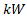
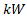
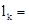
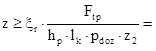
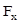

Прорачун моделирање и цртежи фрикционе спојнице шк. 2022/23. год.
Израчунати потребне параметре и моделирати фрикциону спојницу на основу улазних података:
Снага на вратилу спојнице:  12 
12 
Број обртаја вратила спојнице: 900 
Фактор спољних динамичких сила:  1.25
1.25
Материјал вратила: Č.0545
Материјал унутрашњих ламела: каљен челик
Материјал спољашњих ламела: каљен челик са облогом од синтерованог метала
Површине: подмазане прскањем
Степен сигурности против клизања: 1.1 до 1.6
Излазни пречник вратила електромотора: 55 
Веза вратила и главчине остварена је: клином
Пречници вратила која се спајају спојницом су једнаки по димензијама.
Потребно је:
- Прорачунати основне делове фрикционе спојнице,
- Моделирати делове и склоп фрикционе спојнице,
- Израдити радионичке цртеже делова и цртеж склопа спојнице са саставницом,
- Дати технички опис конструкције с освртом на стандардне делове и делове које треба израдити, као и на начин одржавања.
Литература - извор знања:
- Машински елементи I - Спасоје Драпић
- Машински елементи II - Спасоје Драпић
Снага на вратилу спојнице: 12
Број обртаја вратила спојнице: 900
Угаона брзина:
 94.248
94.248 
Обртни момент:
0.159154943 
159154.943 

За материјал вратила-обода спојнице (по поставци задатка) Č.0545 из Т 2.3 М.Е.I усвајамо трајну динамичку чврстоћу на једносмерну промену напона за случај увијања:
 170
170 
Дозвољени напон увијања :
 56.66667
56.66667
Степен сигурности
усвајамо из T2.5:  3
3

Идеални пречник вратила :
 24.275
24.275
С обзиром да је веза вратила и главчине клином, и да је излазни пречник вратила електромотра: 55
усваја се пречник
прикључног вратила: 55
Пречник главчине спојнице на погонском вратилу :
99
усвајам: 100
Унутрашњи пречник :
(110 до 126.5)
Спољашњи пречник :
(192.5 до 220)
Усвајају се за погонску ламелу следеће димензије: Ø210/Ø120x3
210 120 3
105 60
Усвајају се за гоњену ламелу следеће димензије: Ø200/Ø110x3
200 110 3
100  55
55
Гранични обртни момент који спојница може да пренесе:
=Sμ*KA*T">
средњи полупречник момента трења се рачуна:
81.667
по поставци задатка: 1.2

Коефицијент отпора клизању за тарне површине из Т 7.161 износи:
 0.06 до 0.11 за каљен челик по синтерованом металу и подмазивање прскањем
0.06 до 0.11 за каљен челик по синтерованом металу и подмазивање прскањем
усвајам
:
0.06
Потребна вредност нормалне силе притиска на ламеле износи:
Непознат је број тарних површина:
Површински притисак на додирним површинама ограниченим спољашњим полупречником 100 и унутрашњим 60 се рачуна:
Тарна површина :
20106.193 
Дозвољени површински притисак - Т 7.161:
0.5 до 2
усвајам
: 0.5
Заменом израза за нормалну силу у једначину за површински притисак можемо да одредимо број тарних површина:
3.877
усвајам : 4 тарних површина!
Потребна вредност нормалне силе притиска износи:
9744.18 
број унутрашњих ламела:
2 - гоњених дискова
број спољашњих ламела:
3 - погонских дискова
Површински притисак :
 0.485
0.485
Погонска ламела:
210
Гранична вредност за подножни пречник ожлебљења је:
200
Усвајам пречник подножне кружнице за жлебни профил погонске ламеле:
202
Обимна сила делује на средњем пречнику:
206
Вредност обимне силе:
1545.194
Фактор неравномерности расподеле оптерећења:
 1.15 до 1.35
1.15 до 1.35
усвајам
: 1.15
корисна дужина бокова се
рачуна на основу усвојене дебљине ламеле, при чему се узима у обзир слој синтерованог метала са сваке стране ламеле у вредности: 0.5 а не улази у димензије жлебног споја:
3
 2
Висина озубљења погонске ламеле:
4
Површински притисак на боковима жлебног профила се рачуна:
Дозвољени површински притисак :
100 до 120
усвајам
: 100 - стр. 96. M.E.I.
Број жлебних профила на погонској ламели:
 0.740
усвајам : 3 жлебних профила на погонској ламели - Т 4.8. M.E.I!
Површински притисак :
24.680 - задовољава, јер је:
Напон смицања :
9.538
Из Т 2.3 М.Е.I за Č.1220:
 360
360
Степен сигурности
усвајамо из T2.5: 3
Дозвољени напон смицања :
96.000
Напон смицања је мањи од дозвољеног :
усвајам ширину жлебног профила:
 9 - Т 4.8. M.E.I.
9 - Т 4.8. M.E.I.
Гоњена ламела:
110
Гранична вредност за горњи пречник ожлебљења је:
120
Усвајам горњи пречник кружнице за жлебни профил гоњене ламеле:
120
Обимна сила делује на средњем пречнику:
115
Вредност обимне силе:
2767.912
Фактор неравномерности расподеле оптерећења:
1.15 до 1.35
усвајам
: 1.15
корисна дужина бокова се рачуна на основу усвојене дебљине ламеле, али на гоњеној ламели се не ставља слој синтерованог метала, па је:
3
Висина озубљења гоњене ламеле:
5
Површински притисак на боковима жлебног профила се рачуна:
Дозвољени површински притисак :
100 до 120
усвајам
: 100 - стр. 96. M.E.I.
Број жлебних профила на гоњеној ламели:
1.061
усвајам : 3 жлебних профила на гоњеној ламели - Т 4.8. M.E.I!
Површински притисак :
35.368 - задовољава, јер је:
Напон смицања :
17.086
Из Т 2.3 М.Е.I за Č.1220:
360
Степен сигурности
усвајамо из T2.5: 3
Дозвољени напон смицања :
96.000
Напон смицања је мањи од дозвољеног :
усвајам ширину жлебног профила :
9 - Т 4.8. M.E.I.
За
усвојен пречник
вратила: 55 из T 4.7 M.E.I мере клина износе:
16
 10
10
 6.2
6.2
 0.5
0.5
Дубина жлеба за клин у главчини:
 3.8
3.8

Стандардне дужине клинова: 20, 25, 28, 32, 36, 40, 45, 50, 56, 63, 70, 80, 90, 100, 110, 125, 140, 180, 200, ... , 400, а за нормалне клинове и још: 5, 8, 10, 12, 15, 16, 18.

Усвајамо да је главчина од сивог лива.
Дозвољени површински притисак:
 45 до 65
45 до 65
Усвајам:
45
Обимна сила на клину:
 5787.452
5787.452
Површински притисак између клина и вратила се рачуна по обрасцу:
Површински притисак између клина и главчине се рачуна по обрасцу:
Како је:  следи да је
следи да је 
Корисна дужина клина одређује се из услова да је површински притисак између клина и главчине мањи од дозвољеног.
Корисна дужина клина је:
33.845
Стр. 108 М.Е.I усвајамо стандардну дужину клина:
 50
50
Стварна корисна дужина клина је:
 34
34
Површински притисак између клина и главчине:
44.795 < 45 до 65
Ознака усвојеног клина: Клин без нагиба 16x10x50 Č.0645 JUS M.C2.060
Напон смицања :
10.639
Из Т 2.3 М.Е.I
за Č.0645:
320
Степен сигурности
усвајамо из T2.5: 3
Дозвољени напон смицања :
85.33333
Напон смицања је мањи од дозвољеног :
Стр. 108 М.Е.I
усвајамо стандардну дужину клина
гоњеног вратила:
100
због равномерније расподеле нормалне силе на дискове, нормална сила се остварује помоћу осам полуга, које су равномерно распоређене по обиму спојнице са угаоним размаком од: 45 °
У центру зглобне везе сума момената мора бити једнака нули:
243.605

Полуга се окреће око осовинице - зглобна веза , која је оптерећена на савијање:
На месту зглобне везе од сила: и  се формирају два супротна спрега сила и резултантна сила: која оптерећује осовиницу на савијање, стр 123 М.Е.I!
Резултантна сила :
 1242.144
1242.144
Момент савијања :
2794.824
Трајна динамичка чврстоћа на једносмерно промењиво оптерећење се усваја за материјал осовинице: Č.1730 из T 2.3 M.E.I:
 590
590
Т 2.5 М.Е.I
степен сигурности: 3
Дозвољени напон :
196.667
Пречник осовинице :
="> 5.251
Пречник повећавамо за 10% због хабања и из конструктивних разлога усвајамо:
14

Осовиница је оптерећена на смицање и површински притисак:
Напон смицања :
4.035
Из Т 2.3 М.Е.I за Č.1730:
460
Степен сигурности
усвајамо из T2.5: 3
Дозвољени напон смицања :
122.667
Напон смицања је мањи од дозвољеног :
Површински притисак на дужини :
9.858
Површински притисак на дужини :
9.858
Дозвољени површински притисак
: 10 до 14
Усвајам
: 10 за каљене и брушене додирне површине!
Полуга је оптерећена на савијање :
24360.450
Трајна динамичка чврстоћа на једносмерно промењиво оптерећење се усваја за материјал полуге: Č.1730 из T 2.3 M.E.I:
590
Т 2.5 М.Е.I
степен сигурности: 3
Дозвољени напон :
196.667
Усвојена ширина полуге :
9
Аксијални отпорни момент инерције површине попречног пресека полуге на месту највећег оптерећења:
394.2
Напон савијања износи:
61.797
Напон савијања је мањи од дозвољеног:
Критичан пресек је на месту преласка са прстенастог попречног пресека на правоугаони!
Критична висина:
8.8
Критичан аксијални отпорни момент инерције површине попречног пресека полуге на месту највећег оптерећења:
116.239
Момент савијања на критичном месту :
21924.405
Напон савијања износи:
188.615
Напон савијања је мањи од дозвољеног:
На месту дејства силе напон савијања је нула, па се због тога висина полуге постепено смањује ка месту дејства нормалне силе - идеалан би био облик кубног параболоида !
У обзир није узета центрифугална сила (константан број обртаја - константан интензитет силе) која растерећује осовинице - полуге у раду, тј прорачун је рађен узимајући у обзир неповољније услове рада !